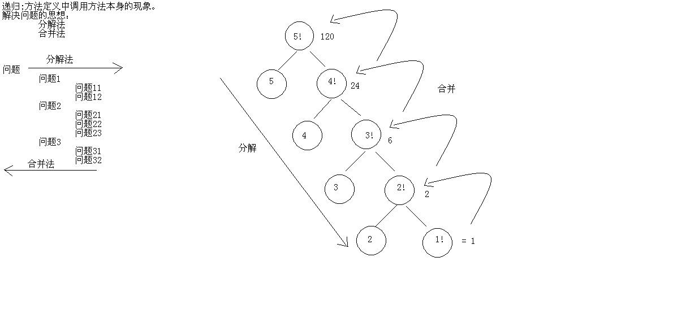
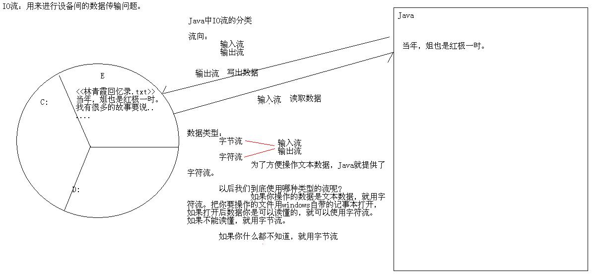
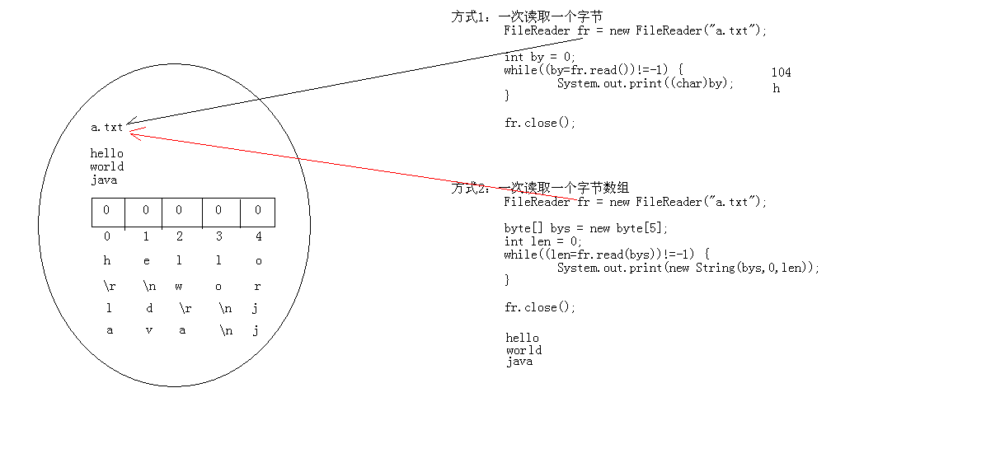

总结¶
1 2 3 4 5 6 7 8 9 10 11 12 13 14 15 16 17 18 19 20 21 22 23 24 25 26 27 28 29 30 31 32 33 34 35 36 37 38 39 40 41 42 43 44 45 46 47 48 49 50 51 52 53 54 55 56 57 58 59 60 61 62 63 64 65 66 67 68 69 70 71 72 73 74 75 76 77 78 79 80 81 82 83 84 85 86 87 88 89 90 91 92 93 94 95 96 97 98 99 | 1:递归(理解) (1)方法定义中调用方法本身的现象 举例：老和尚给小和尚讲故事，我们学编程 (2)递归的注意事项； A:要有出口，否则就是死递归 B:次数不能过多，否则内存溢出 C:构造方法不能递归使用 (3)递归的案例： A:递归求阶乘 B:兔子问题 C:递归输出指定目录下所有指定后缀名的文件绝对路径 D:递归删除带内容的目录(小心使用) 2:IO流(掌握) (1)IO用于在设备间进行数据传输的操作 (2)分类： A:流向 输入流 读取数据 输出流 写出数据 B:数据类型 字节流 字节输入流 字节输出流 字符流 字符输入流 字符输出流 注意： a:如果我们没有明确说明按照什么分，默认按照数据类型分。 b:除非文件用windows自带的记事本打开我们能够读懂，才采用字符流，否则建议使用字节流。 (3)FileOutputStream写出数据 A:操作步骤 a:创建字节输出流对象 b:调用write()方法 c:释放资源 B:代码体现： FileOutputStream fos = new FileOutputStream("fos.txt"); fos.write("hello".getBytes()); fos.close(); C:要注意的问题? a:创建字节输出流对象做了几件事情? b:为什么要close()? c:如何实现数据的换行? d:如何实现数据的追加写入? (4)FileInputStream读取数据 A:操作步骤 a:创建字节输入流对象 b:调用read()方法 c:释放资源 B:代码体现： FileInputStream fis = new FileInputStream("fos.txt"); //方式1 int by = 0; while((by=fis.read())!=-1) { System.out.print((char)by); } //方式2 byte[] bys = new byte[1024]; int len = 0; while((len=fis.read(bys))!=-1) { System.out.print(new String(bys,0,len)); } fis.close(); (5)案例：2种实现 A:复制文本文件 B:复制图片 C:复制视频 (6)字节缓冲区流 A:BufferedOutputStream B:BufferedInputStream (7)案例：4种实现 A:复制文本文件 B:复制图片 C:复制视频 3:自学字符流 IO流分类 字节流： InputStream FileInputStream BufferedInputStream OutputStream FileOutputStream BufferedOutputStream 字符流： Reader FileReader BufferedReader Writer FileWriter BufferedWriter |
递归的思想概述¶
-
递归
• 方法定义中调用方法本身的现象
-
递归注意实现
• 要有出口，否则就是死递归
• 次数不能太多，否则就内存溢出
• 构造方法不能递归使用
递归解决问题的思想及内存图¶
-
递归解决问题的思想
• 找到出口
• 找到规律
1 2 3 4 5 6 7 8 9 10 11 12 13 14 15 16 17 18 19 20 21 22 23 24 25 26 27 28 29 30 31 32 33 34 35 36 37 38 39 40 | package cn.itcast_01; /* * 递归：方法定义中调用方法本身的现象 * * 方法的嵌套调用，这不是递归。 * Math.max(Math.max(a,b),c); * * public void show(int n) { * if(n <= 0) { * System.exit(0); * } * System.out.println(n); * show(--n); * } * * 注意事项： * A:递归一定要有出口，否则就是死递归 * B:递归的次数不能太多，否则就内存溢出 * C:构造方法不能递归使用 * * 举例： * A:从前有座山，山里有座庙，庙里有个老和尚和小和尚，老和尚在给小和尚讲故事，故事是： * 从前有座山，山里有座庙，庙里有个老和尚和小和尚，老和尚在给小和尚讲故事，故事是： * 从前有座山，山里有座庙，庙里有个老和尚和小和尚，老和尚在给小和尚讲故事，故事是： * 从前有座山，山里有座庙，庙里有个老和尚和小和尚，老和尚在给小和尚讲故事，故事是： * ... * 庙挂了,或者山崩了 * B:学编程 -- 高薪就业 -- 挣钱 -- 娶媳妇 -- 生娃娃 -- 放羊 -- 挣学费 * 学编程 -- 高薪就业 -- 挣钱 -- 娶媳妇 -- 生娃娃 -- 放羊 -- 挣学费 * 学编程 -- 高薪就业 -- 挣钱 -- 娶媳妇 -- 生娃娃 -- 放羊 -- 挣学费 * 学编程 -- 高薪就业 -- 挣钱 -- 娶媳妇 -- 生娃娃 -- 放羊 -- 挣学费 * ... * 娶不到媳妇或者生不了娃娃 */ public class DiGuiDemo { // public DiGuiDemo() { // DiGuiDemo(); // } } |
-
求阶乘案例
• 普通for循环
• 递归实现 
1 2 3 4 5 6 7 8 9 10 11 12 13 14 15 16 17 18 19 20 21 22 23 24 25 26 27 28 29 30 31 32 33 34 35 36 37 38 39 40 41 42 43 | package cn.itcast_02; /* * 需求：请用代码实现求5的阶乘。 * 下面的知识要知道： * 5! = 1*2*3*4*5 * 5! = 5*4! * * 有几种方案实现呢? * A:循环实现 * B:递归实现 * a:做递归要写一个方法 * b:出口条件 * c:规律 */ public class DiGuiDemo { public static void main(String[] args) { int jc = 1; for (int x = 2; x <= 5; x++) { jc *= x; } System.out.println("5的阶乘是：" + jc); System.out.println("5的阶乘是："+jieCheng(5)); } /* * 做递归要写一个方法: * 返回值类型：int * 参数列表：int n * 出口条件: * if(n == 1) {return 1;} * 规律: * if(n != 1) {return n*方法名(n-1);} */ public static int jieCheng(int n){ if(n==1){ return 1; }else { return n*jieCheng(n-1); } } } |
• 画内存图

• 断点查看执行流程
递归练习¶
- 兔子问题(斐波那契数列)
1 2 3 4 5 6 7 8 9 10 11 12 13 14 15 16 17 18 19 20 21 22 23 24 25 26 27 28 29 30 31 32 33 34 35 36 37 38 39 40 41 42 43 44 45 46 47 48 49 50 51 52 53 54 55 56 57 58 59 60 61 62 63 64 65 66 67 68 69 70 71 72 | package cn.itcast_02; /* * 有一对兔子，从出生后第3个月起每个月都生一对兔子，小兔子长到第三个月后每个月又生一对兔子，假如兔子都不死，问第二十个月的兔子对数为多少？ * 分析：我们要想办法找规律 * 兔子对数 * 第一个月： 1 * 第二个月： 1 * 第三个月： 2 * 第四个月： 3 * 第五个月： 5 * 第六个月： 8 * ... * * 由此可见兔子对象的数据是： * 1,1,2,3,5,8... * 规则： * A:从第三项开始，每一项是前两项之和 * B:而且说明前两项是已知的 * * 如何实现这个程序呢? * A:数组实现 * B:变量的变化实现 * C:递归实现 * * 假如相邻的两个月的兔子对数是a,b * 第一个相邻的数据：a=1,b=1 * 第二个相邻的数据：a=1,b=2 * 第三个相邻的数据：a=2,b=3 * 第四个相邻的数据：a=3,b=5 * 看到了：下一次的a是以前的b，下一次是以前的a+b */ public class DiGuiDemo2 { public static void main(String[] args) { // 定义一个数组 int[] arr = new int[20]; arr[0] = 1; arr[1] = 1; // arr[2] = arr[0] + arr[1]; // arr[3] = arr[1] + arr[2]; // ... for (int x = 2; x < arr.length; x++) { arr[x] = arr[x - 2] + arr[x - 1]; } System.out.println(arr[19]);// 6765 System.out.println("----------------"); int a = 1; int b = 1; for (int x = 0; x < 18; x++) { // 临时变量存储上一次的a int temp = a; a = b; b = temp + b; } System.out.println(b); System.out.println("----------------"); System.out.println(fib(20)); } /* * 方法： 返回值类型：int 参数列表：int n 出口条件： 第一个月是1，第二个月是1 规律： 从第三个月开始，每一个月是前两个月之和 */ public static int fib(int n) { if (n == 1 || n == 2) { return 1; } else { return fib(n - 1) + fib(n - 2); } } } |
执行
- 递归遍历目录下指定后缀名结尾的文件名称
1 2 3 4 5 6 7 8 9 10 11 12 13 14 15 16 17 18 19 20 21 22 23 24 25 26 27 28 29 30 31 32 33 34 35 36 37 38 39 40 41 42 43 44 45 | package cn.itcast_03; import java.io.File; /* * 需求：请大家把E:\JavaSE目录下所有的java结尾的文件的绝对路径给输出在控制台。 * * 分析： * A:封装目录 * B:获取该目录下所有的文件或者文件夹的File数组 * C:遍历该File数组，得到每一个File对象 * D:判断该File对象是否是文件夹 * 是：回到B * 否：继续判断是否以.java结尾 * 是：就输出该文件的绝对路径 * 否：不搭理它 */ public class FilePathDemo { public static void main(String[] args) { // 封装目录 File srcFolder = new File("I:\\视频教程\\java视频"); // 递归功能实现 getAllJavaFilePaths(srcFolder); } private static void getAllJavaFilePaths(File srcFolder) { // 获取该目录下所有的文件或者文件夹的File数组 File[] fileArray = srcFolder.listFiles(); // 遍历该File数组，得到每一个File对象 for (File file : fileArray) { // 判断该File对象是否是文件夹 if (file.isDirectory()) { getAllJavaFilePaths(file); } else { // 继续判断是否以.java结尾 if (file.getName().endsWith(".java")) { // 就输出该文件的绝对路径 System.out.println(file.getAbsolutePath()); } } } } } |
- 递归删除带内容的目录
1 2 3 4 5 6 7 8 9 10 11 12 13 14 15 16 17 18 19 20 21 22 23 24 25 26 27 28 29 30 31 32 33 34 35 36 37 38 39 40 41 42 43 44 | package cn.itcast_03; import java.io.File; /* * 需求：递归删除带内容的目录 * * 目录我已经给定：demo * * 分析： * A:封装目录 * B:获取该目录下的所有文件或者文件夹的File数组 * C:遍历该File数组，得到每一个File对象 * D:判断该File对象是否是文件夹 * 是：回到B * 否：就删除 */ public class FileDeleteDemo { public static void main(String[] args) { // 封装目录 File srcFolder = new File("demo"); // 递归实现 deleteFolder(srcFolder); } private static void deleteFolder(File srcFolder) { // 获取该目录下的所有文件或者文件夹的File数组 File[] fileArray = srcFolder.listFiles(); if (fileArray != null) { //增强for在遍历数组的时候不能是null因此需要加一个判断 // 遍历该File数组，得到每一个File对象 for (File file : fileArray) { // 判断该File对象是否是文件夹 if (file.isDirectory()) { deleteFolder(file); } else { System.out.println(file.getName() + "---" + file.delete()); //删除文件 } } System.out.println(srcFolder.getName() + "---" + srcFolder.delete()); //删除文件后再删除文件夹,因为java使用删除的时候文件夹里不能有文件 } } } |
IO流概述¶
-
IO流用来处理设备之间的数据传输
• 上传文件和下载文件
-
Java对数据的操作是通过流的方式
-
Java用于操作流的对象都在IO包中
IO流分类¶
-
按照数据流向
• 输入流 读入数据
• 输出流 写出数据
-
按照数据类型
• 字节流
• 字符流
• 什么情况下使用哪种流呢?
• 如果数据所在的文件通过windows自带的记事本打开并能读懂里面的内容，就用字符流。其他用字节流。
• 如果你什么都不知道，就用字节流

IO流常用基类¶
-
字节流的抽象基类：
• InputStream ，OutputStream。
-
字符流的抽象基类：
• Reader ， Writer。
-
注：由这四个类派生出来的子类名称都是以其父类名作为子类名的后缀。
• 如：InputStream的子类FileInputStream。
• 如：Reader的子类FileReader。
字节流写数据¶
-
OutputStream
• FileOutputStream
-
往一个文本文件中写一句话：”helloworld” • 分析发现其实更适合用字符流，但是由于字节流先出现，所以，我们考虑先使用字节流后面再讲会什么出现字符流。
-
FileOutputStream的构造方法
• FileOutputStream(File file)
• FileOutputStream(String name)
字节流写数据的方式¶
-
public void write(int b)
-
public void write(byte[] b)
-
public void write(byte[] b,int off,int len)
字节流写数据常见问题¶
-
创建字节输出流到底做了哪些事情?
-
数据写成功后，为什么要close()?
-
如何实现数据的换行?
-
如何实现数据的追加写入?
字节流写数据加入异常处理
-
加入异常处理的IO流操作
1 2 3 4 5 6 7 8 9 10 11 12 13 14 15 16 17 18 19 20 21 22 23 24 25 26 27 28 29 30 31 32 33 34 35 36 37 38 39 40 41 42 43 44 45 46 47 48 49 50 51 52 53 54 55 56 57 58 59 60 61 62 63 64 65 66 67 68 69 70 71 72 73 74 75 76 77 78 79 | package cn.itcast_01; import java.io.File; import java.io.FileNotFoundException; import java.io.FileOutputStream; import java.io.IOException; /* * IO流的分类： * 流向： * 输入流 读取数据 * 输出流 写出数据 * 数据类型： * 字节流 * 字节输入流 读取数据 InputStream * 字节输出流 写出数据 OutputStream * 字符流 * 字符输入流 读取数据 Reader * 字符输出流 写出数据 Writer * * 注意：一般我们在探讨IO流的时候，如果没有明确说明按哪种分类来说，默认情况下是按照数据类型来分的。 * * 需求：我要往一个文本文件中输入一句话："hello,io" * * 分析： * A:这个操作最好是采用字符流来做，但是呢，字符流是在字节流之后才出现的，所以，今天我先讲解字节流如何操作。 * B:由于我是要往文件中写一句话，所以我们要采用字节输出流。 * * 通过上面的分析后我们知道要使用：OutputStream * 但是通过查看API，我们发现该流对象是一个抽象类，不能实例化。 * 所以，我们要找一个具体的子类。 * 而我们要找的子类是什么名字的呢?这个时候，很简单，我们回想一下，我们是不是要往文件中写东西。 * 文件是哪个单词：File * 然后用的是字节输出流，联起来就是：FileOutputStream * 注意：每种基类的子类都是以父类名作为后缀名。 * XxxOutputStream * XxxInputStream * XxxReader * XxxWriter * 查看FileOutputStream的构造方法： * FileOutputStream(File file) * FileOutputStream(String name) * * 字节输出流操作步骤： * A:创建字节输出流对象 * B:写数据 * C:释放资源 */ public class FileOutputStreamDemo { public static void main(String[] args) throws IOException { // 创建字节输出流对象 // FileOutputStream(File file) // File file = new File("fos.txt"); //会出现编译时期的异常 // FileOutputStream fos = new FileOutputStream(file); // FileOutputStream(String name) FileOutputStream fos = new FileOutputStream("fos.txt"); //直接一行代码等效上面的方式 /* * 创建字节输出流对象了做了几件事情： * A:调用系统功能去创建文件 * B:创建fos对象 * C:把fos对象指向这个文件 */ //写数据 fos.write("hello,IO".getBytes()); //先把字符串转换成字节数组 getBytes()是将字符串转换成字节数组//报异常就直接选择小手使用给定的方法就好了 fos.write("java".getBytes()); //释放资源 //关闭此文件输出流并释放与此流有关的所有系统资源。 fos.close(); /* * 为什么一定要close()呢? * A:让流对象变成垃圾，这样就可以被垃圾回收器回收了 * B:通知系统去释放跟该文件相关的资源 */ //java.io.IOException: Stream Closed //fos.write("java".getBytes()); } } |
1 2 3 4 5 6 7 8 9 10 11 12 13 14 15 16 17 18 19 20 21 22 23 24 25 26 27 28 29 30 31 32 33 34 35 36 37 | package cn.itcast_01; import java.io.FileOutputStream; import java.io.IOException; /* * 字节输出流操作步骤： * A:创建字节输出流对象 * B:调用write()方法 * C:释放资源 * * public void write(int b):写一个字节 * public void write(byte[] b):写一个字节数组 * public void write(byte[] b,int off,int len):写一个字节数组的一部分 */ public class FileOutputStreamDemo2 { public static void main(String[] args) throws IOException { // 创建字节输出流对象 // OutputStream os = new FileOutputStream("fos2.txt"); // 多态 FileOutputStream fos = new FileOutputStream("fos2.txt"); // 调用write()方法 //fos.write(97); //97 -- 底层二进制数据 -- 通过记事本打开 -- 找97对应的字符值 -- a // fos.write(57); // fos.write(55); //public void write(byte[] b):写一个字节数组 byte[] bys={97,98,99,100,101}; fos.write(bys); //public void write(byte[] b,int off,int len):写一个字节数组的一部分 fos.write(bys,1,3); //释放资源 fos.close(); } } |
如何换行,以及追加写入
1 2 3 4 5 6 7 8 9 10 11 12 13 14 15 16 17 18 19 20 21 22 23 24 25 26 27 28 29 30 31 32 33 34 35 36 | package cn.itcast_01;
import java.io.FileOutputStream;
import java.io.IOException;
/*
* 如何实现数据的换行?
* 为什么现在没有换行呢?因为你值写了字节数据，并没有写入换行符号。
* 如何实现呢?写入换行符号即可呗。
* 刚才我们看到了有写文本文件打开是可以的，通过windows自带的那个不行，为什么呢?
* 因为不同的系统针对不同的换行符号识别是不一样的?
* windows:\r\n
* linux:\n
* Mac:\r
* 而一些常见的个高级记事本，是可以识别任意换行符号的。
*
* 如何实现数据的追加写入?
* 用构造方法带第二个参数是true的情况即可
*/
public class FileOutputStreamDemo3 {
public static void main(String[] args) throws IOException {
// 创建字节输出流对象
// FileOutputStream fos = new FileOutputStream("fos3.txt");
// 创建一个向具有指定 name 的文件中写入数据的输出文件流。如果第二个参数为 true，则将字节写入文件末尾处，而不是写入文件开始处。
FileOutputStream fos = new FileOutputStream("fos3.txt", true);//这里的第二个参数使用了True就不会覆盖写入而是追加,类似于python的a
// 写数据
for (int x = 0; x < 10; x++) {
fos.write(("hello" + x).getBytes()); // hello0 .... hello9
fos.write("\r\n".getBytes()); // 换行符 \r\n 不能只使用\n在windows中只使用\n是不行的
}
// 释放资源
fos.close();
}
}
|
异常处理代码
1 2 3 4 5 6 7 8 9 10 11 12 13 14 15 16 17 18 19 20 21 22 23 24 25 26 27 28 29 30 31 32 33 34 35 36 37 38 39 40 41 42 43 44 45 46 47 48 49 50 51 52 53 54 55 56 57 58 59 60 61 62 63 64 65 66 | package cn.itcast_01; import java.io.FileNotFoundException; import java.io.FileOutputStream; import java.io.IOException; /* * 加入异常处理的字节输出流操作 */ public class FileOutputStreamDemo4 { public static void main(String[] args) { // 分开做异常处理 // FileOutputStream fos = null; // try { // fos = new FileOutputStream("fos4.txt"); // } catch (FileNotFoundException e) { // e.printStackTrace(); // } // // try { // fos.write("java".getBytes()); // } catch (IOException e) { // e.printStackTrace(); // } // // try { // fos.close(); // } catch (IOException e) { // e.printStackTrace(); // } // 一起做异常处理 // try { // FileOutputStream fos = new FileOutputStream("fos4.txt"); // fos.write("java".getBytes()); // fos.close(); // } catch (FileNotFoundException e) { // e.printStackTrace(); // } catch (IOException e) { // e.printStackTrace(); // } // 改进版 // 为了在finally里面能够看到该对象就必须定义到外面，为了访问不出问题，还必须给初始化值null FileOutputStream fos = null; try { // fos = new FileOutputStream("z:\\fos4.txt");//这里初始化放在外面 fos = new FileOutputStream("fos4.txt"); fos.write("java".getBytes()); } catch (FileNotFoundException e) { e.printStackTrace(); } catch (IOException e) { e.printStackTrace(); } finally { // 如果fos不是null，才需要close() if (fos != null) { // 为了保证close()一定会执行，就放到这里了 try { fos.close(); } catch (IOException e) { e.printStackTrace(); } } } } } |
字节流读取数据¶
-
InputStream
• FileInputStream
-
把刚才写的数据读取出来显示在控制台
-
FileInputStream的构造方法
• FileInputStream(File file)
• FileInputStream(String name)
-
FileInputStream的成员方法
• public int read()
• public int read(byte[] b)
字节流读取数据两种方式图解比较¶
-
一次读取一个字节
-
一次读取一个字节数组 
• 每次可以读取多个数据，提高了操作效率 读取字节数组
1 2 3 4 5 6 7 8 9 10 11 12 13 14 15 16 17 18 19 20 21 22 23 24 25 26 27 28 29 30 31 32 33 34 35 36 37 38 39 40 41 42 43 44 45 46 47 48 49 50 51 52 53 54 55 56 57 58 59 60 61 62 63 64 65 66 67 68 69 70 71 | package cn.itcast_02; import java.io.FileInputStream; import java.io.IOException; /* * 一次读取一个字节数组：int read(byte[] b) * 返回值其实是实际读取的字节个数。 */ public class FileInputStreamDemo2 { public static void main(String[] args) throws IOException { // 创建字节输入流对象 // FileInputStream fis = new FileInputStream("fis2.txt"); FileInputStream fis = new FileInputStream("FileOutputStreamDemo.java"); // 读取数据 // 定义一个字节数组 // 第一次读取 // byte[] bys = new byte[5]; // int len = fis.read(bys); // // System.out.println(len); // // System.out.println(new String(bys)); // // System.out.println(new String(bys, 0, len)); // System.out.print(new String(bys, 0, len)); // // // 第二次读取 // len = fis.read(bys); // // System.out.println(len); // // System.out.println(new String(bys)); // // System.out.println(new String(bys, 0, len)); // System.out.print(new String(bys, 0, len)); // // // 第三次读取 // len = fis.read(bys); // // System.out.println(len); // // System.out.println(new String(bys)); // // System.out.println(new String(bys, 0, len)); // System.out.print(new String(bys, 0, len)); // // // 第四次读取 // len = fis.read(bys); // // System.out.println(len); // // System.out.println(new String(bys, 0, len)); // System.out.print(new String(bys, 0, len)); // // 代码重复了，用循环改进 // // 但是，我不知道结束条件 // // len = fis.read(bys); // // System.out.println(len); // // len = fis.read(bys); // // System.out.println(len); // // 如果读取到的实际长度是-1，就说明没有数据了 // byte[] bys = new byte[115]; // 0 // int len = 0; // while ((len = fis.read(bys)) != -1) { // System.out.print(new String(bys, 0, len)); // // System.out.print(new String(bys)); //千万要带上len的使用 // } // 最终版代码 // 数组的长度一般是1024或者1024的整数倍 byte[] bys = new byte[1024]; int len = 0; //len = fis.read(bys) 就是一次读取的长度是一个int类型 while ((len = fis.read(bys)) != -1) { System.out.print(new String(bys, 0, len)); } // 释放资源 fis.close(); } } |
字节流复制数据练习¶
- 把当前项目目录下的a.txt内容复制到当前项目目录下的b.txt中
1 2 3 4 5 6 7 8 9 10 11 12 13 14 15 16 17 18 19 20 21 22 23 24 25 26 27 28 29 30 31 32 33 34 35 36 37 38 39 | package cn.itcast_03; import java.io.FileInputStream; import java.io.FileOutputStream; import java.io.IOException; /* * 复制文本文件。 * * 数据源：从哪里来 * a.txt -- 读取数据 -- FileInputStream * * 目的地：到哪里去 * b.txt -- 写数据 -- FileOutputStream * * java.io.FileNotFoundException: a.txt (系统找不到指定的文件。) * * 这一次复制中文没有出现任何问题，为什么呢? * 上一次我们出现问题的原因在于我们每次获取到一个字节数据，就把该字节数据转换为了字符数据，然后输出到控制台。 * 而这一次呢?确实通过IO流读取数据，写到文本文件，你读取一个字节，我就写入一个字节，你没有做任何的转换。 * 它会自己做转换。 */ public class CopyFileDemo { public static void main(String[] args) throws IOException { // 封装数据源 FileInputStream fis = new FileInputStream("a.txt"); //使用Input读取数据 // 封装目的地 FileOutputStream fos = new FileOutputStream("b.txt"); //使用Output写入数据 int by = 0; while ((by = fis.read()) != -1) { //直接按行读取字节 fos.write(by); //将读取的字节写入到目的地 } // 释放资源(先关谁都行) fos.close(); fis.close(); } } |
复制中文没有出现任何问题，为什么呢?
1 2 3 4 5 6 7 8 9 10 11 12 13 14 15 16 17 18 19 20 21 22 | package cn.itcast_03; import java.util.Arrays; /* * 计算机是如何识别什么时候该把两个字节转换为一个中文呢? * 在计算机中中文的存储分两个字节： * 第一个字节肯定是负数。 * 第二个字节常见的是负数，可能有正数。但是没影响。 */ public class StringDemo { public static void main(String[] args) { // String s = "abcde"; // // [97, 98, 99, 100, 101] String s = "我爱你中国"; // [-50, -46, -80, -82, -60, -29, -42, -48, -71, -6] //每两个字节拼一个中文的字符 byte[] bys = s.getBytes(); // 将字符串转换成字符数组 System.out.println(Arrays.toString(bys));// 将字符数组转换成字符串 } } |
- 把c:\a.txt内容复制到d:\b.txt中
1 2 3 4 5 6 7 8 9 10 11 12 13 14 15 16 17 18 19 20 21 22 23 24 25 26 27 28 29 30 31 32 | package cn.itcast_03; import java.io.FileInputStream; import java.io.FileOutputStream; import java.io.IOException; /* * 需求：把c盘下的a.txt的内容复制到d盘下的b.txt中 * * 数据源： * c:\\a.txt -- 读取数据-- FileInputStream * 目的地： * d:\\b.txt -- 写出数据 -- FileOutputStream */ public class CopyFileDemo2 { public static void main(String[] args) throws IOException { // 封装数据源 FileInputStream fis = new FileInputStream("c:\\a.txt"); // 封装目的地 FileOutputStream fos = new FileOutputStream("d:\\b.txt"); // 复制数据 int by = 0; while ((by = fis.read()) != -1) { fos.write(by); } // 释放资源 fos.close(); fis.close(); } } |
- 把e:\林青霞.jpg内容复制到当前项目目录下的 mn.jpg中
1 2 3 4 5 6 7 8 9 10 11 12 13 14 15 16 17 18 19 20 21 22 23 24 25 26 27 28 29 30 31 32 | package cn.itcast_03; import java.io.FileInputStream; import java.io.FileOutputStream; import java.io.IOException; /* * 需求：把e:\\林青霞.jpg内容复制到当前项目目录下的mn.jpg中 * * 数据源： * e:\\林青霞.jpg --读取数据--FileInputStream * 目的地： * mn.jpg--写出数据--FileOutputStream */ public class CopyImageDemo { public static void main(String[] args) throws IOException { // 封装数据源 FileInputStream fis = new FileInputStream("e:\\林青霞.jpg"); // 封装目的地 FileOutputStream fos = new FileOutputStream("mn.jpg"); // 复制数据 int by = 0; while ((by = fis.read()) != -1) { fos.write(by); } // 释放资源 fos.close(); fis.close(); } } |
- 把e:\哥有老婆.mp4复制到当前项目目录下的 copy.mp4中
1 2 3 4 5 6 7 8 9 10 11 12 13 14 15 16 17 18 19 20 21 22 23 24 25 26 27 28 29 30 31 32 | package cn.itcast_03; import java.io.FileInputStream; import java.io.FileOutputStream; import java.io.IOException; /* * 需求：把e:\\哥有老婆.mp4复制到当前项目目录下的copy.mp4中 * * 数据源： * e:\\哥有老婆.mp4--读取数据--FileInputStream * 目的地： * copy.mp4--写出数据--FileOutputStream */ public class CopyMp4Demo { public static void main(String[] args) throws IOException { // 封装数据源 FileInputStream fis = new FileInputStream("e:\\哥有老婆.mp4"); // 封装目的地 FileOutputStream fos = new FileOutputStream("copy.mp4"); // 复制数据 int by = 0; while ((by = fis.read()) != -1) { fos.write(by); } // 释放资源 fos.close(); fis.close(); } } |
复制大文件的测试
1 2 3 4 5 6 7 8 9 10 11 12 13 14 15 16 17 18 19 20 21 22 23 24 25 26 27 28 29 30 31 32 | package cn.itcast_04; import java.io.FileInputStream; import java.io.FileOutputStream; import java.io.IOException; /* * 需求：把c:\\a.txt内容复制到d:\\b.txt中 * * 数据源： * c:\\a.txt -- 读取数据 -- FileInputStream * 目的地： * d:\\b.txt -- 写出数据 -- FileOutputStream */ public class CopyFileDemo { public static void main(String[] args) throws IOException { // 封装数据源 FileInputStream fis = new FileInputStream("c:\\a.txt"); FileOutputStream fos = new FileOutputStream("d:\\b.txt"); // 复制数据 byte[] bys = new byte[1024]; //一次读取的是1024个字节就是1K的大小 int len = 0; while ((len = fis.read(bys)) != -1) { fos.write(bys, 0, len); } // 释放资源 fos.close(); fis.close(); } } |
拷贝视频
1 2 3 4 5 6 7 8 9 10 11 12 13 14 15 16 17 18 19 20 21 22 23 24 25 26 27 28 29 30 31 32 33 | package cn.itcast_04; import java.io.FileInputStream; import java.io.FileOutputStream; import java.io.IOException; /* * 需求：把e:\\哥有老婆.mp4复制到当前项目目录下的copy.mp4中 * * 数据源： * e:\\哥有老婆.mp4--读取数据--FileInputStream * 目的地： * copy.mp4--写出数据--FileOutputStream */ public class CopyMp4Demo { public static void main(String[] args) throws IOException { // 封装数据源 FileInputStream fis = new FileInputStream("e:\\哥有老婆.mp4"); // 封装目的地 FileOutputStream fos = new FileOutputStream("copy.mp4"); // 复制数据 byte[] bys = new byte[1024]; int len = 0; while ((len = fis.read(bys)) != -1) { fos.write(bys, 0, len); } // 释放资源 fos.close(); fis.close(); } } |
字节缓冲流¶
-
字节流一次读写一个数组的速度明显比一次读写一个字节的速度快很多，这是加入了数组这样的缓冲区效果，java本身在设计的时候，也考虑到了这样的设计思想(装饰设计模式后面讲解)，所以提供了字节缓冲区流
-
字节缓冲输出流
• BufferedOutputStream
1 2 3 4 5 6 7 8 9 10 11 12 13 14 15 16 17 18 19 20 21 22 23 24 25 26 27 28 29 30 31 32 33 34 35 | package cn.itcast_05; import java.io.BufferedOutputStream; import java.io.FileOutputStream; import java.io.IOException; /* * 通过定义数组的方式确实比以前一次读取一个字节的方式快很多，所以，看来有一个缓冲区还是非常好的。 * 既然是这样的话，那么，java开始在设计的时候，它也考虑到了这个问题，就专门提供了带缓冲区的字节类。 * 这种类被称为：缓冲区类(高效类) * 写数据：BufferedOutputStream * 读数据：BufferedInputStream * * 构造方法可以指定缓冲区的大小，但是我们一般用不上，因为默认缓冲区大小就足够了。 * * 为什么不传递一个具体的文件或者文件路径，而是传递一个OutputStream对象呢? * 原因很简单，字节缓冲区流仅仅提供缓冲区，为高效而设计的。但是呢，真正的读写操作还得靠基本的流对象实现。 */ public class BufferedOutputStreamDemo { public static void main(String[] args) throws IOException { // BufferedOutputStream(OutputStream out) //需要给的是一个子类的对象 // FileOutputStream fos = new FileOutputStream("bos.txt"); // BufferedOutputStream bos = new BufferedOutputStream(fos); // 简单写法 BufferedOutputStream bos = new BufferedOutputStream( new FileOutputStream("bos.txt")); //使用匿名对象这样简单 // 写数据 bos.write("hello".getBytes()); // 释放资源 bos.close(); //只需要释放bos的资源就好了 } } |
-
字节缓冲输入流
• BufferedInputStream
1 2 3 4 5 6 7 8 9 10 11 12 13 14 15 16 17 18 19 20 21 22 23 24 25 26 27 28 29 30 31 32 | package cn.itcast_05; import java.io.BufferedInputStream; import java.io.FileInputStream; import java.io.IOException; /* * 注意：虽然我们有两种方式可以读取，但是，请注意，这两种方式针对同一个对象在一个代码中只能使用一个。 */ public class BufferedInputStreamDemo { public static void main(String[] args) throws IOException { // BufferedInputStream(InputStream in) BufferedInputStream bis = new BufferedInputStream(new FileInputStream( "bos.txt")); // 读取数据 // int by = 0; // while ((by = bis.read()) != -1) { // System.out.print((char) by); // } // System.out.println("---------"); byte[] bys = new byte[1024]; int len = 0; while ((len = bis.read(bys)) != -1) { System.out.print(new String(bys, 0, len)); } // 释放资源 bis.close(); } } |
字节缓冲流复制数据练习¶
- 把d:\林青霞.jpg内容复制到当前项目目录下的 mn.jpg中
- 把d:\哥有老婆.mp4复制到当前项目目录下的 copy.mp4中
- 四种方式比较复制效率
1 2 3 4 5 6 7 8 9 10 11 12 13 14 15 16 17 18 19 20 21 22 23 24 25 26 27 28 29 30 31 32 33 34 35 36 37 38 39 40 41 42 43 44 45 46 47 48 49 50 51 52 53 54 55 56 57 58 59 60 61 62 63 64 65 66 67 68 69 70 71 72 73 74 75 76 77 78 79 80 81 82 83 84 85 86 87 88 89 90 91 92 93 94 95 | package cn.itcast_06; import java.io.BufferedInputStream; import java.io.BufferedOutputStream; import java.io.FileInputStream; import java.io.FileOutputStream; import java.io.IOException; /* * 需求：把e:\\哥有老婆.mp4复制到当前项目目录下的copy.mp4中 * * 字节流四种方式复制文件： * 基本字节流一次读写一个字节： 共耗时：117235毫秒 * 基本字节流一次读写一个字节数组： 共耗时：156毫秒 * 高效字节流一次读写一个字节： 共耗时：1141毫秒 * 高效字节流一次读写一个字节数组： 共耗时：47毫秒 */ public class CopyMp4Demo { public static void main(String[] args) throws IOException { long start = System.currentTimeMillis(); // method1("e:\\哥有老婆.mp4", "copy1.mp4"); // method2("e:\\哥有老婆.mp4", "copy2.mp4"); // method3("e:\\哥有老婆.mp4", "copy3.mp4"); method4("e:\\哥有老婆.mp4", "copy4.mp4"); long end = System.currentTimeMillis(); System.out.println("共耗时：" + (end - start) + "毫秒"); } // 高效字节流一次读写一个字节数组： public static void method4(String srcString, String destString) throws IOException { BufferedInputStream bis = new BufferedInputStream(new FileInputStream( srcString)); BufferedOutputStream bos = new BufferedOutputStream( new FileOutputStream(destString)); byte[] bys = new byte[1024]; int len = 0; while ((len = bis.read(bys)) != -1) { bos.write(bys, 0, len); } bos.close(); bis.close(); } // 高效字节流一次读写一个字节： public static void method3(String srcString, String destString) throws IOException { BufferedInputStream bis = new BufferedInputStream(new FileInputStream( srcString)); BufferedOutputStream bos = new BufferedOutputStream( new FileOutputStream(destString)); int by = 0; while ((by = bis.read()) != -1) { bos.write(by); } bos.close(); bis.close(); } // 基本字节流一次读写一个字节数组 public static void method2(String srcString, String destString) throws IOException { FileInputStream fis = new FileInputStream(srcString); FileOutputStream fos = new FileOutputStream(destString); byte[] bys = new byte[1024]; int len = 0; while ((len = fis.read(bys)) != -1) { fos.write(bys, 0, len); } fos.close(); fis.close(); } // 基本字节流一次读写一个字节 public static void method1(String srcString, String destString) throws IOException { FileInputStream fis = new FileInputStream(srcString); FileOutputStream fos = new FileOutputStream(destString); int by = 0; while ((by = fis.read()) != -1) { fos.write(by); } fos.close(); fis.close(); } } |